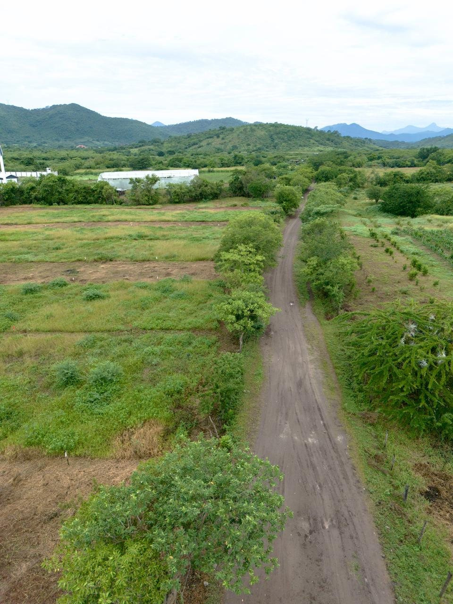
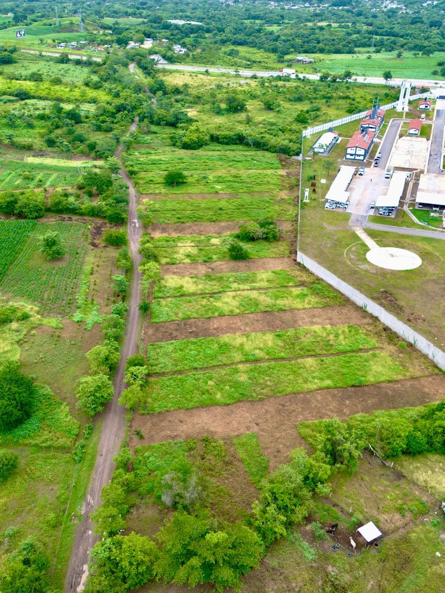

Cirianes del Valle
Proyecto de lotificación en Buenavista de la Salud, municipio de Chilpancingo de los Bravo. Consulta disponibilidad, características y agenda una visita directamente por WhatsApp.
Conoce el proyecto
Cirianes del Valle ofrece lotes en una zona con acceso desde Buenavista de la Salud, con atención personalizada para revisar disponibilidad y opciones de pago.
Información y disponibilidad
La disponibilidad y características de los lotes pueden cambiar. Para recibir información vigente, medidas, ubicación de lotes disponibles y condiciones de pago, solicita una cotización por WhatsApp.
Identidad y ubicación
Cirianes del Valle es el nombre comercial del proyecto.
El proyecto es operado por Eduardo Blanco Olais.
Buenavista de la Salud, municipio de Chilpancingo de los Bravo, Guerrero, México.
Vista del terreno
Fotografías aéreas reales del área del proyecto y su entorno inmediato.


¿Quieres conocer los lotes disponibles?
Escríbenos por WhatsApp para recibir información actualizada o coordinar una visita.
Aviso de privacidad simplificado
Los datos que voluntariamente compartas mediante WhatsApp u otros medios de contacto serán utilizados únicamente para atender solicitudes de información, dar seguimiento a consultas y coordinar visitas relacionadas con Cirianes del Valle.
Este sitio no solicita pagos ni recopila datos bancarios. Para cualquier duda sobre el uso de tus datos, puedes comunicarte al número de contacto publicado en esta página.